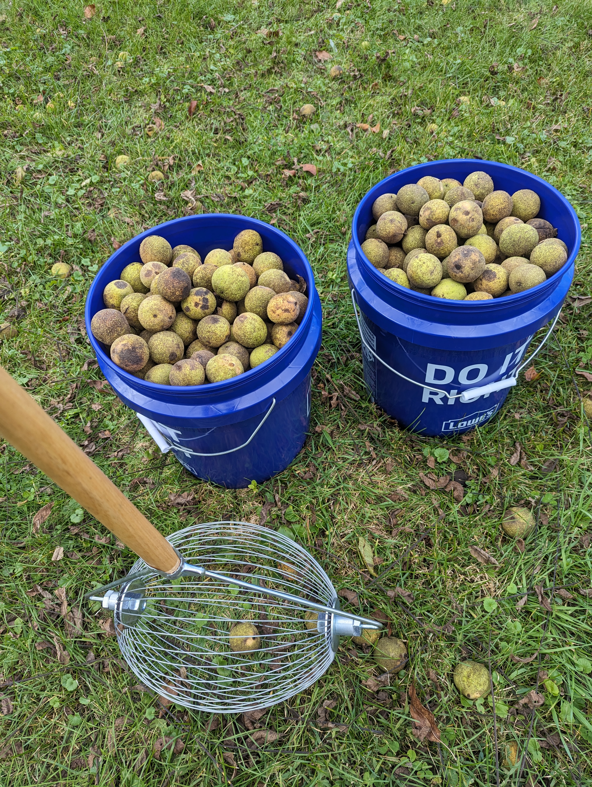

Efficiencies
September 21, 2024
We have a lot of black walnut trees on our property. This time of year, the black walnuts fall, each slightly larger than a golf ball. At times, they pile so densely, you can't take a step without crushing one. It's not fun for your ankles, nor our dog's feet.
Two years ago, we bought a Nut Wizard to help us harvest them, or at the very least, pick them up. We can easily collect close to 1,000 of them each autumn.
Today, I spent about an hour, casually walking around the property, using the Nut Wizard to pick up any black walnuts I could find. When my Nut Wizard was full, I emptied them into this large bucket to process in the next week or so. I kept the bucket at the center of the property, electing to not move it around with me. This meant I would be taking long walks across the property the further I got from the bucket.
At one point, Victoria asked me why I didn't drag the bucket around to make shorter trips. She then tried to move the bucket, realized how heavy it was, and then understood. But it wasn't entirely about the weight why I kept the bucket where it was.
It's seemingly the default for people, including myself, to look for the most efficient way to do things. This is usually done to save time and/or money. Sure, it would have been the more efficient thing to move the bucket every ten minutes or so in order to create a lot shorter trips. But maybe we don't always need to be fighting for efficiency in *everything* we do. In today's case, I had no meetings I needed to prepare for, no work I had to complete, no place to go. It was my day to relax and destress for the week ahead.
As the autumn breeze brushed my sweater this early morning, Nut Wizard in-hand, I didn't mind the longer walks. It gave me more time to think and didn't cause any strenuous motions, like if I did have to lug a large nut-filled bucket around the property. I didn't need to hunt for optimized efficiency. I was simply doing yardwork.
